Code
suppressPackageStartupMessages(library(ggplot2))This page summarizes work related to chapters 2 of Statistical Rethinking (2020).
Source libraries for more efficient and readable code.
suppressPackageStartupMessages(library(ggplot2))See (2020, pp. 32–35).
\[ Pr(W,L|p)=\frac{(W+L)!}{W!L!}p^W(1-p)^L \tag{1}\]
The probability of \(W\) and \(L\), conditional on \(p\) is defined by the formula in Equation 1.
The dbinom() function computes this binomial probability. To compute the probability of observing \(x=6\) \(W\)s in 9 globe tosses with \(p=4\), we proceed as indicated below:
```{r}
#| code-fold: false
dbinom(x = 6, size = 9, prob = 0.5, log = FALSE)
```[1] 0.1640625So, to compute the binomial probabilities for observing all \(n+1\) possible cases, we proceed as follows:
```{r}
#| code-fold: false
# Generate the data
n_W <- 0:9
p_n <- purrr::map(n_W, dbinom, size = 9, prob = 0.5, log = FALSE) |>
purrr::list_c()
like_1 <- data.frame(n_obs = n_W, p_n = p_n)
# Plot the data
like_1 |>
ggplot() +
geom_point(aes(x = n_obs, y = p_n)) +
theme_classic()
```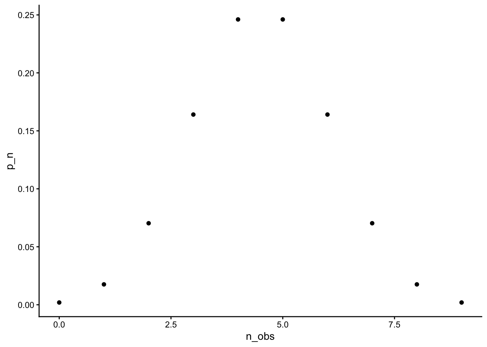
To produce a set of binomial plots based on increasing numbers of samples, we proceed as follows.
```{r}
#| code-fold: false
# Generate the data
n_samples <- c(1, 2, 4, 8, 16, 32, 64)
how_many_W <- function(n) 0:n
n_W <- purrr::map(n_samples, how_many_W) |>
purrr::list_c()
n_states <- rep(n_samples, n_samples+1)
p_n <- purrr::map2(n_W, n_states, dbinom, prob = 0.5, log = FALSE) |>
purrr::list_c()
like_2 <- data.frame(n_states = n_states, n_W = n_W, p_n = p_n)
```like_2 |>
ggplot() +
geom_point(aes(x = n_W, y = p_n)) +
facet_wrap(n_states, ncol = 3) +
theme_classic() +
ggtitle("Probability density as number of samples increases.")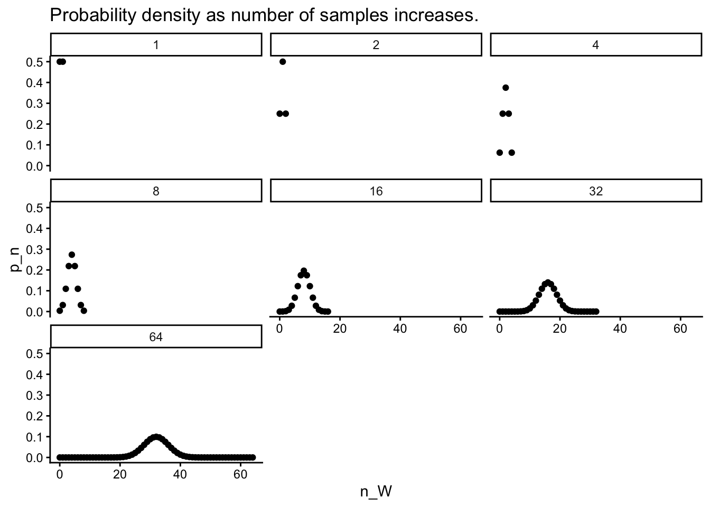
So, this figure isn’t quite what I want. But it’s a start. What I think I want is a graph that plots the proportion of times \(W\) was picked out of \(n\) samples vs. the probability density.
```{r}
#| code-fold: false
# Generate the data
n_samples <- c(1, 2, 4, 8, 16, 32, 64)
how_many_W <- function(n) 0:n
n_W <- purrr::map(n_samples, how_many_W) |>
purrr::list_c()
n_states <- rep(n_samples, n_samples+1)
p_W <- n_W/n_states
p_n <- purrr::map2(n_W, n_states, dbinom, prob = 0.5, log = FALSE) |>
purrr::list_c()
like_3 <- data.frame(n_states = n_states, n_W = n_W, p_W = p_W, p_n = p_n)
```like_3 |>
ggplot() +
geom_point(aes(x = p_W, y = p_n)) +
facet_wrap(n_states, ncol = 3) +
theme_classic() +
ggtitle("Probability density for a given proportion of W's as number of samples increases.")
Yes. That’s it.
Here are some comments on pp. 38-40.
We use grid sampling to decide a priori how many values of \(p(W,L|p)\) we want to sample. In the work above, I tried \(2^n, n\in\{0, 6\}\). The code below follows code fragment 2.3 on p. 40.
# define grid
n_grid = 20
n_obs = 6
n_samples = 9
p_grid <- seq(from = 0, to = 1, length.out = n_grid)
prior <- rep(1, n_grid) # Constant prior p=1
likelihood <- dbinom(x = n_obs, size = n_samples, prob = p_grid)
plot(x = p_grid, y = likelihood, type = "b")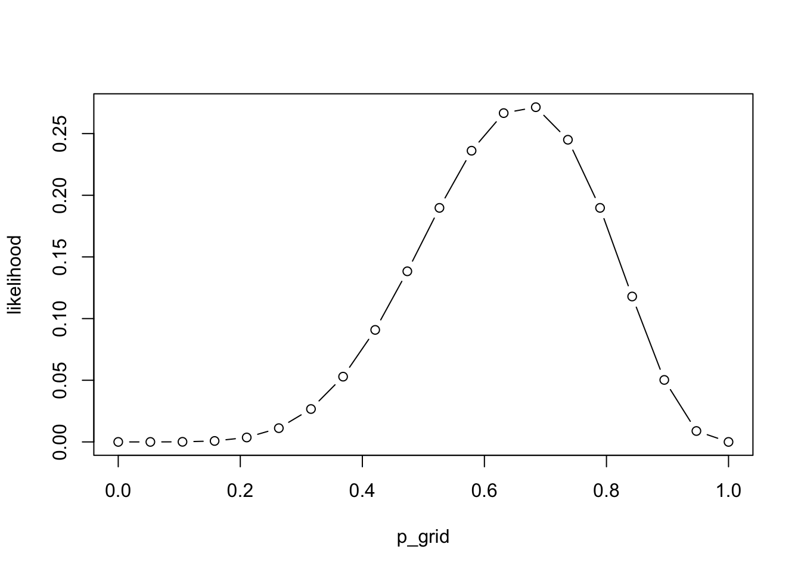
unstd.posterior <- likelihood*prior
posterior <- unstd.posterior/sum(unstd.posterior)
plot(x = p_grid, y = posterior, type = "b")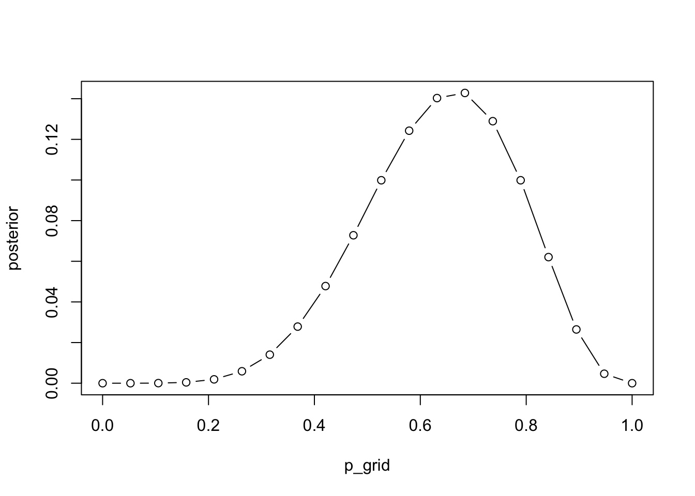
Given observed observations as follows:
Compute and plot the grid aapproximate posterior distribution. Assume a uniform prior.
n_1 <- 3
n_W_1 <- 3
n_grid_1 <- 10
prior_1 <- rep(1, n_grid_1, length.out = n_1)
p_grid_1 <- seq(from = 0, to = 1, length.out = n_1)
likelihood_1 <- dbinom(x = n_W_1, size = n_1, prob = p_grid_1)
unstd.posterior_1 <- likelihood_1*prior_1
posterior_1 <- unstd.posterior_1/sum(unstd.posterior_1)
plot(x = p_grid_1, y = posterior_1, type = "b")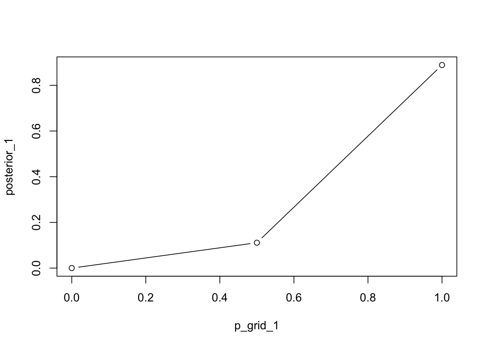
# Better to make a function
# Helper function
plot_posterior <- function(n_W = 3, n = 3, prior_p = 1) {
if (n_W > n) error("n_W must be <= n.")
prior <- rep(prior_p, n)
p_grid <- seq(from = 0, to = 1, length.out = n)
likelihood <- dbinom(x = n_W, size = n, prob = p_grid)
unstd.posterior <- likelihood*prior
posterior <- unstd.posterior/sum(unstd.posterior)
plot(x = p_grid, y = posterior, type = "b")
}
plot_posterior()
Now, let’s try the other cases.
plot_posterior(n_W = 3, n = 4, prior_p = 1)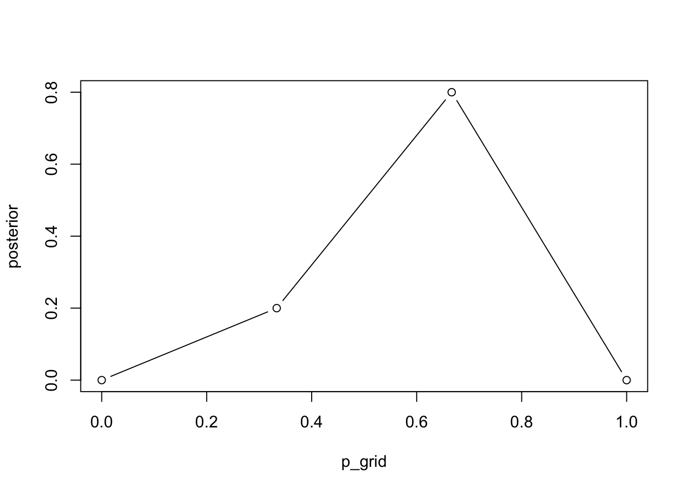
plot_posterior(n_W = 5, n = 7, prior_p = 1)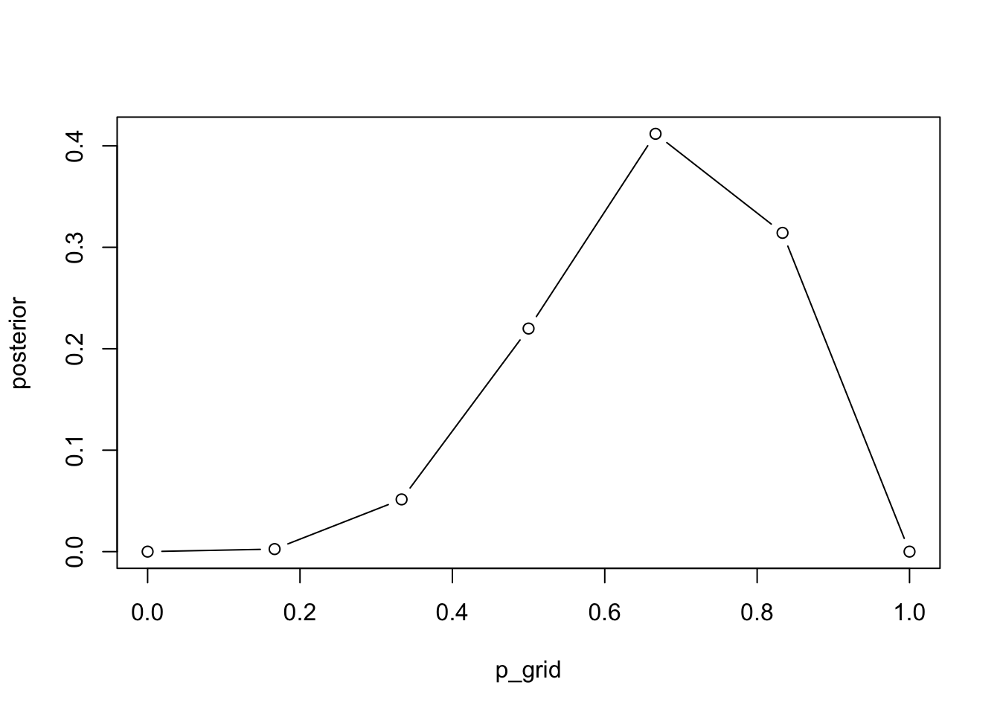
Create a function to compute p_prior.
compute_p_prior <- function(n = 10, p_const = .5) {
p <- seq(0, 1, length.out = n)
p[p < p_const] <- 0
p[p >= p_const] <- p_const
p
}
compute_p_prior() [1] 0.0 0.0 0.0 0.0 0.0 0.5 0.5 0.5 0.5 0.5Not the most elegant, but let’s move on.
# Helper function
plot_posterior_2 <- function(n_W = 3, n = 3, p_const = 0.5) {
if (n_W > n) error("n_W must be <= n.")
prior <- compute_p_prior(n, p_const)
p_grid <- seq(from = 0, to = 1, length.out = n)
likelihood <- dbinom(x = n_W, size = n, prob = p_grid)
unstd.posterior <- likelihood*prior
posterior <- unstd.posterior/sum(unstd.posterior)
plot(x = p_grid, y = posterior, type = "b")
}
plot_posterior_2()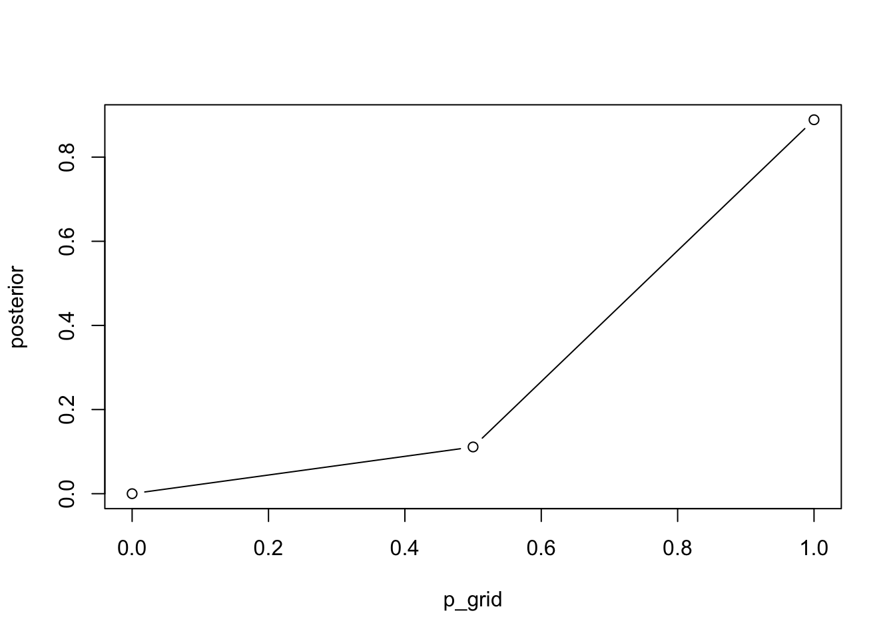
plot_posterior_2(3, 4)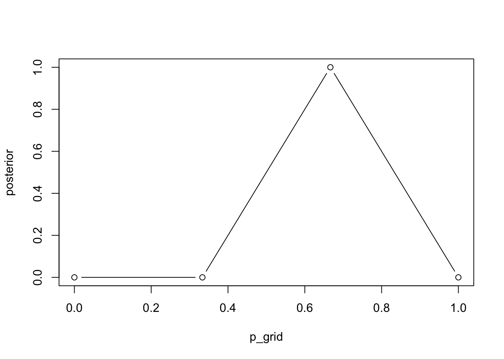
plot_posterior_2(5, 7)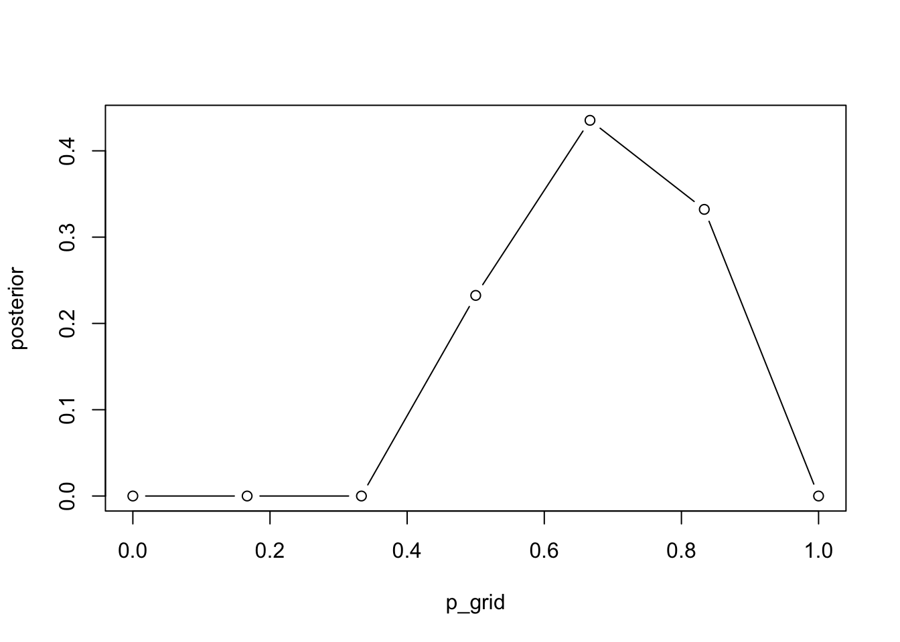
The truncated prior pushes the posterior likelihood to the right.
Let’s make one more tweak to the function to include the actual sequence of observations as input.
compute_p_prior_2 <- function(n = 10, p_const = 0.5, p_thresh = 0.5) {
p <- seq(0, 1, length.out = n)
p[p < p_thresh] <- 0
p[p >= p_thresh] <- p_const
p
}
compute_p_prior_2() [1] 0.0 0.0 0.0 0.0 0.0 0.5 0.5 0.5 0.5 0.5plot_posterior_2 <- function(obs = c("W", "W", "W"), n = length(obs),
p_thresh = 0.5, p_const = 0.7) {
n_W = sum(obs == "W")
prior <- compute_p_prior_2(n, p_const, p_thresh)
p_grid <- seq(from = 0, to = 1, length.out = n)
likelihood <- dbinom(x = n_W, size = n, prob = p_grid)
unstd.posterior <- likelihood*prior
posterior <- unstd.posterior/sum(unstd.posterior)
plot(x = p_grid, y = posterior, type = "b",
xlab = "prob of water",
ylab = "posterior probability")
}
plot_posterior_2(obs = c("W", "W", "W"))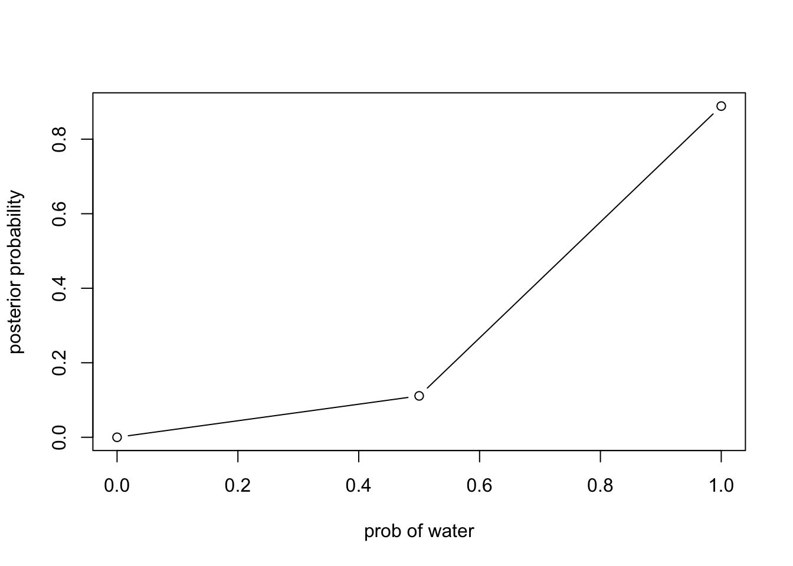
plot_posterior_2(obs = c("W", "W", "W", "L"))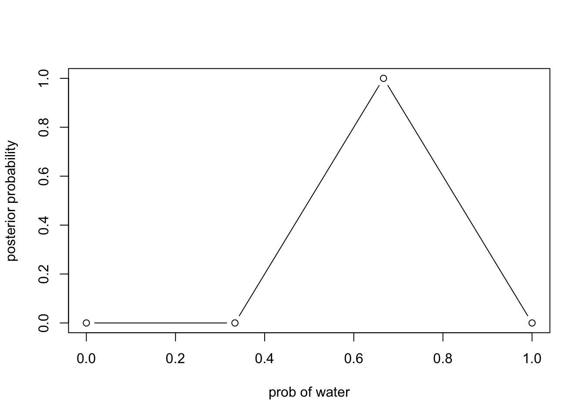
plot_posterior_2(obs = c("L", "W", "W", "L", "W", "W", "W"))Let’s try the last one with a non-thresholded prior.
plot_posterior_2(obs = c("L", "W", "W", "L", "W", "W", "W"), p_thresh = 0, p_const = 1)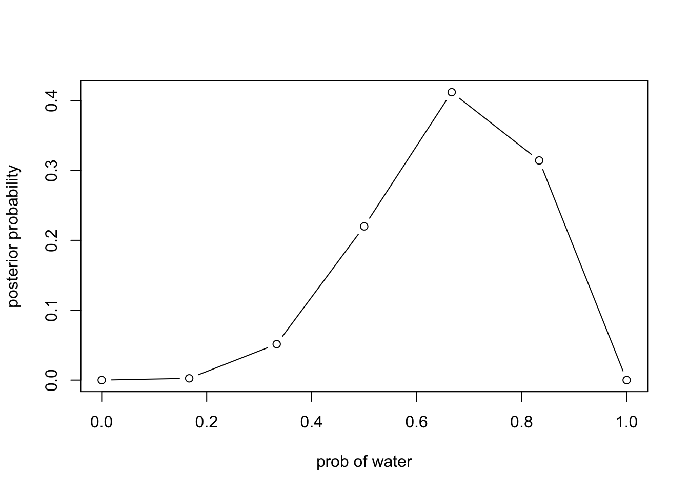
Let’s create a generative model.
A toss consists of two data elements, the unknown planet (Mars or Earth), and the observed observation of land.
So, we want to determine the following:
\[p(Earth|land)\] This implies the following:
\[p(Earth|land) \propto p(land|Earth)*p(Earth)\]
Or, exactly
\[p(Earth|land) = \frac{p(land|Earth)*p(Earth)}{p(land)}\]
We know that
\[p(land|Earth)=1-0.7=0.3\], and
\[p(Earth)=0.5\]. We also know that
\[p(land|Mars)=1\]
and \[p(Mars)=0.5\].
We can compute \(p(land)\) as follows:
\[p(land)=p(land|Earth)*p(Earth)+p(land|Mars)*p(Mars)\]
or \[0.3*0.5+1*.5 =\]
0.65
So,
\[p(Earth|land) = \frac{p(land|Earth)*p(Earth)}{p(land)}\]
is \[\frac{0.3*0.5}{0.65}=0.23\]